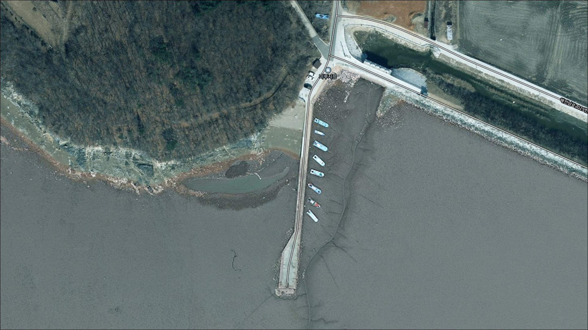
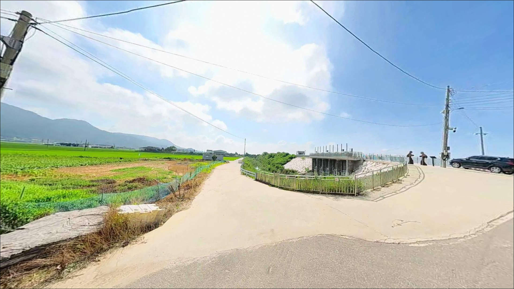
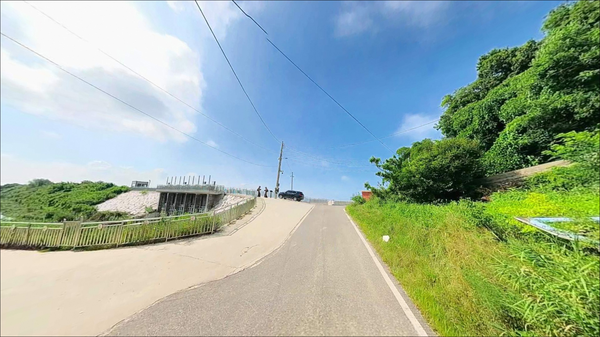
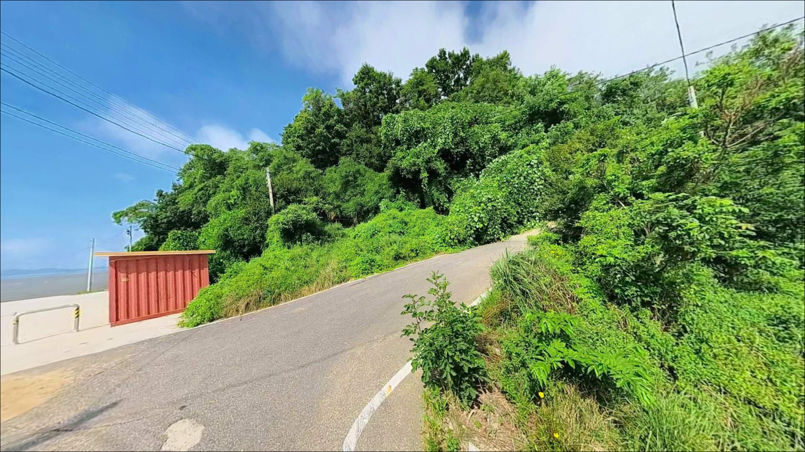
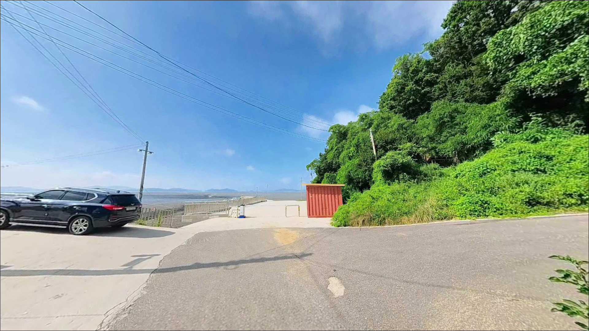
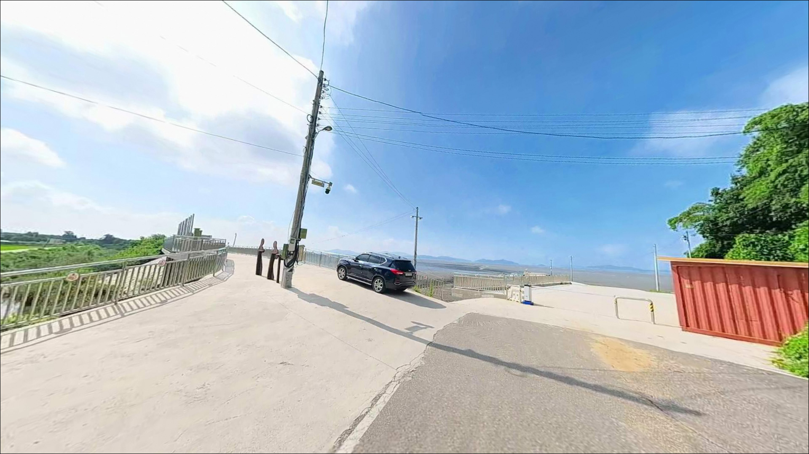
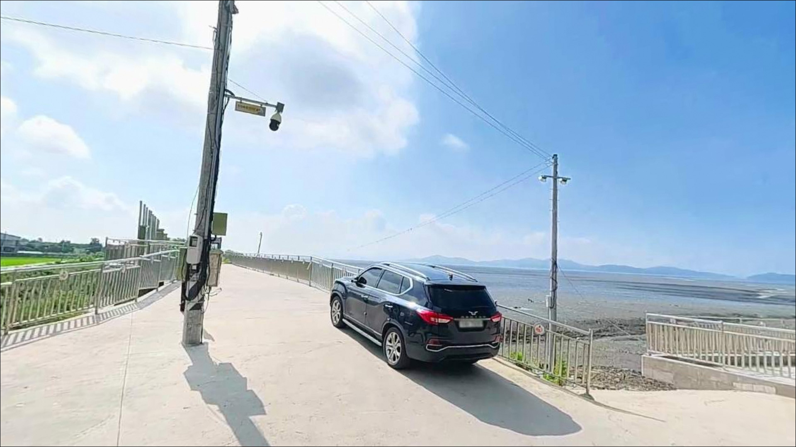
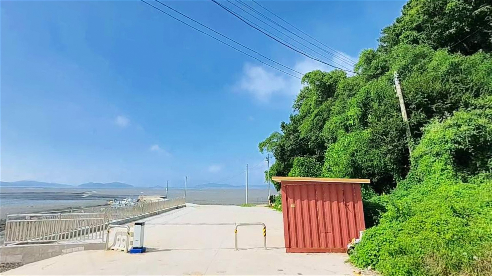
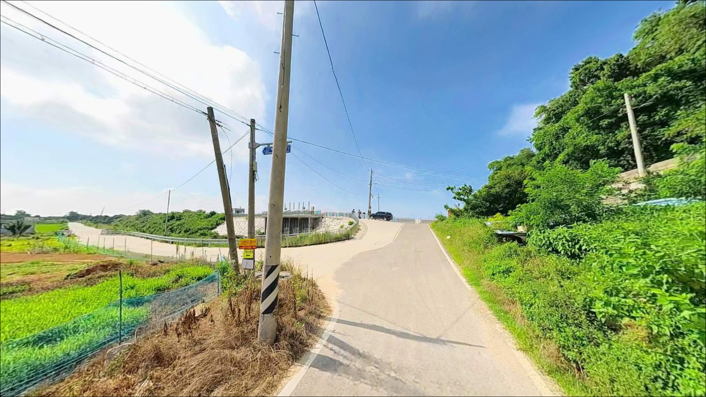

미루지항, 강화도 인천 강화군 바다와 가장 가까이 머무는 차박, 낚시 해안 명소
이 페이지에는 광고(제휴 링크 포함)가 있으며, 광고 링크를 통해 구매하면 운영자가 판매 수익 또는 수수료를 받을 수 있습니다. 포인트 사진: 카카오맵 스카이뷰·로드뷰. 이 페이지의 지도·사진 이미지는 카카오맵의 실제 서비스 이미지와 다를 수 있습니다.


포인트 안내
미루지항
인천 강화군 화도면 여차리 1002-1
강화도 남단 소형 어항은 도착 시각보다
물때 타이밍이 먼저입니다.
간조 때 미루지항을 찾으면
선착장 앞이 갯벌로 드러나
채비를 던질 수심 자체가 사라지는 구조입니다.
만조 전후를 맞추지 않으면
낚시가 되지 않는 서해 갯벌형 포인트입니다.
강화도 화도면 해안남로 안쪽에 자리한
여차리 끝자락 포구로,
마니산 남서 방향 해안에서
조용히 자리를 지키고 있는 곳입니다.
알려진 조황 정보가 거의 없는
비노출 로컬 포인트라
사람이 적은 만큼 자리 경쟁 없이
천천히 탐색해 볼 수 있습니다.
이 글은 미루지항의
진입 동선, 물때 판단 기준,
지형 기반 낚시 여건, 차박 환경에 집중합니다.
조황 단정이나 시설 확정 정보는
이 글의 범위에 포함되지 않습니다.

1. 진입 동선과 포인트 접근성
미루지항으로 향하는 길은
화도면 해안남로에서 여차리 방면으로
좁은 마을 안길을 따라 들어가는 구조입니다.
마지막 구간이 폭이 좁고 회차 공간이
넉넉하지 않을 가능성이 높아,
출발 전 위성지도로 진입 경로를 미리 확인하는 것이
현장 혼선을 줄이는 기본 준비입니다.
큰길에서 여차리 안으로 꺾어 드는 길이 헷갈리고
마지막 구간이 좁으니 초행이라면 진입로를 미리 확인하는 것이 좋습니다.
대형 SUV나 루프탑 텐트 장착 차량이라면
왕복 교행 여건을 미리 가늠해 두는 편이 안전합니다.
소형·중형 차량이라면
진입 자체에 큰 무리는 없을 것으로 보입니다.
주차는 선착장 앞 공터나
마을 공터를 이용하는 방식이
일반적인 편입니다.
어선 조업 동선을 막지 않는 자리를 먼저 고르는 것이
기본 매너이자 현장 마찰을 피하는 방법입니다.

2. 차박 환경과 야간 체류 여건
미루지항 주변은 인적이 드문
소규모 어촌 마을 분위기입니다.
야간에는 차량 통행이 거의 없는 편이고
민가가 밀집된 구조가 아니어서
조용한 환경은 유지되는 편입니다.
다만 마을 내부와 가까운 위치라
차박 프라이버시가 높지 않을 가능성이 있어
자리 선택에 신경 쓰는 편이 좋습니다.
가로등은 마을 입구 쪽에만 있을 가능성이 높고
포구 끝단은 어두운 환경으로 보입니다.
개인 조명 장비는 필수이며,
외항 방향은 서해 바람의 영향을 받는 위치라
기상에 따라 파도 소음이나
바람이 강해지는 상황도 대비해야 합니다.
텐트 없이 차량 안에서 머무는 방식이
이 포인트에 어울리는 체류 형태입니다.
인근에 미루지돈대가 있어
돈대 주변은 문화재 보호구역으로 지정되어 있습니다.
취사·야영·쓰레기 투기가 금지된 구역이므로
포구 주변 안내판을 반드시 먼저 확인하고
차박 자리를 정하는 것이 원칙입니다.


3. 주변 편의시설 및 인프라 현황
미루지항 반경 내에
공중화장실, 샤워장 등
공식 편의시설 정보는 확인되지 않습니다.
완전 자급 체제로 진입하는 것이 현실적이며,
식수, 얼음, 간식, 조명, 여분 채비까지
출발 전에 모두 챙겨야 합니다.
편의점은 화도면 흥왕리 방향으로
이마트24 강화흥왕리점이 있어
출발 전 들러 준비물을 보충하기에
적합한 동선입니다.
장화리 방면 해안남로 쪽으로도
GS 편의점·주유소가 확인되므로
미루지항 진입 전에 들러 연료와 식품을 채워 두는 편이
안전합니다.
반경 10km 안으로 이동하면
동막해변 쪽으로 편의점·식당·화장실 등
기본 인프라를 이용할 수 있습니다.
미루지항은 낚시 전후 식사나
비상 시 보충 거점으로 동막해변 방향을
염두에 두는 것이 효율적입니다.

4. 방문 전 준비사항과 체크 포인트
미루지항에서 가장 먼저 확인해야 할 것은
물때입니다.
강화도는 서해안에서도 조차가 특히 큰 지역으로,
간조 때는 선착장 앞 갯벌이 넓게 드러나
사실상 낚시가 불가능한 상황이 됩니다.
바다타임에서 미루지항 기준 물때를 확인하고
만조 전후 1~2시간이 실질 낚시 가능 시간입니다.
사리 전후에는 조류가 세져
채비 컨트롤이 어려워지는 상황도 생길 수 있습니다.
조금 전후를 기준으로 삼는 편이 안정적이며,
기상 변화도 당일 아침에 한 번 더 확인하는 것이
갯벌 포인트 공략에서
불필요한 이동을 줄이는 방법입니다.
인근에 미루지돈대와 군 시설이 혼재해 있어
특정 구역은 출입 제한이 있을 수 있습니다.
현장 안내판을 꼭 확인하고,
어선 작업 공간과 진입 동선을 방해하지 않는
자리 선정이 기본 매너입니다.
야간 낚시라면 구명조끼와 헤드랜턴은
반드시 챙겨야 합니다.

5. 지형 기반 낚시 여건 분석
미루지항은 방파제와 갯벌이 함께 형성된
서해 전형적인 소형 어항 구조입니다.
포구 안쪽은 수심이 얕고
간조 때는 바닥이 드러나는 편이어서,
낚시 자리는 방파제 끝단이나
외항 방향 수로 구간이 중심이 됩니다.
만조 수위가 올라온 뒤 방파제 끝단에서
멀리 채비를 보내는 방식이
이 포인트 지형에 잘 맞습니다.
항 서쪽 방향으로는 갯바위 지형이 이어지는 편이며,
미루지항과 수기해변 사이 갯바위 라인을
묶어서 탐색하는 구성도 가능합니다.
갯바위 구간은 갯벌보다 수심이 유지되는 편이라
루어나 원투 채비로 바닥층을 노리기에
적합한 지형 조건을 갖추고 있습니다.
수심은 만조 기준으로
방파제 끝단 기준 3~5m 내외로 형성될 것으로 보이며,
서해 특성상 물때에 따라 수위 차가 크게 납니다.
사리 전후에는 조류가 강해져
봉돌 무게를 올려야 하는 상황이 생길 수 있고,
조금 이후 조류가 느려질 때
바닥 탐색 원투 채비의 반응이 살아나는 편입니다.
최신 조황은 출조 전에 꼭 검색해 보시기 바랍니다.


6. 미루지항에 어울리는 낚시 스타일
이 포인트에서 가장 기본이 되는 낚시는
원투낚시입니다.
갯지렁이나 청개비를 미끼로
방파제 끝단에서 멀리 투척해
바닥층 어종을 기다리는 방식이
서해 갯벌형 포인트에 잘 맞습니다.
만조 전후 물이 들어오는 시점에
망둥어, 붕장어, 숭어 등을 기대해 볼 수 있는
지형 조건을 갖추고 있습니다.
루어낚시는 방파제 끝단이나
갯바위 구간에서 시도해 볼 수 있습니다.
소형 지그헤드에 그럽웜이나 미노우 계열 루어를
활용해 암반 주변을 탐색하는 방식으로,
만조 수위가 확보된 시점에
우럭이나 농어 계열이 기대되는 구간입니다.
다만 갯벌 뻘이 많이 섞이는 시점에는
시계 확보가 어려워 조과 차이가 날 수 있습니다.
포구 안쪽 내항 방향에서는
민장대나 릴찌를 활용한 생활낚시 스타일도
어울립니다.
물이 들어온 뒤 잔잔한 내항 수면에서
숭어나 망둥어를 가볍게 노리는 방식으로,
초보자나 아이와 함께하는 출조에
부담이 적은 스타일입니다.

7. 대안 포인트와 플랜 B 동선
미루지항 물이 빠져 있거나
주차 여건이 여의치 않을 때
가장 먼저 고려할 대안은
수기해변 서측 갯바위 구간입니다.
미루지항과 해안선이 이어지는 구조로
같은 물때 흐름을 공유하며,
갯바위 지형이 갖춰져 루어나 원투를
병행하기 좋은 포인트입니다.
분오항 일대도 동일 해안선상의 대안입니다.
강화도 남부 걷기 코스에 포함된 어촌 포구로
방파제 낚시와 포구 분위기를
미루지항과 유사한 조건에서 즐길 수 있습니다.
간조 시간에 미루지항에서 이동해
분오항 방파제에서 낚시를 이어가는 동선이
이 권역에서 효율적인 선택입니다.
차박 대안으로는 동막해변 공영주차장이
강화 화도면 안에서 편의시설 접근성이
가장 나은 선택입니다.
편의점, 화장실, 해변 뷰가 함께 갖춰져 있어
미루지항에서 조황이 좋지 않은 날
이동 거점으로 활용하기 좋습니다.

물때만 맞추면 조용하게
자리 하나 차지할 수 있는 포인트입니다
원투낚시를 좋아하고
사람 없는 한적한 서해 포구를 찾는 낚시인이라면
미루지항의 지형 조건은 충분히 맞는 편입니다.
알려지지 않은 포인트인 만큼
자리 경쟁 없이 방파제 끝단을
여유 있게 쓸 수 있다는 점이
이 포인트의 가장 현실적인 장점입니다.
반면 물때 계산 없이 찾아가거나
편의시설을 기대하고 가면
낚시도 차박도 절반은 실패할 수 있는 곳입니다.
물때 확인, 완전 자급 준비, 진입로 사전 체크—
이 세 가지를 갖추고 가는 사람에게
조용하고 기억에 남을 포구입니다.
낚시를 마치고 갯벌 냄새 맡으며
차 안에서 하룻밤 머물고 싶은 분이라면
미루지돈대 구역 출입 제한 여부만 먼저 확인해 두면
낚시와 차박을 함께 엮는 조용한 하루를
기대해볼 수 있는 포인트입니다.